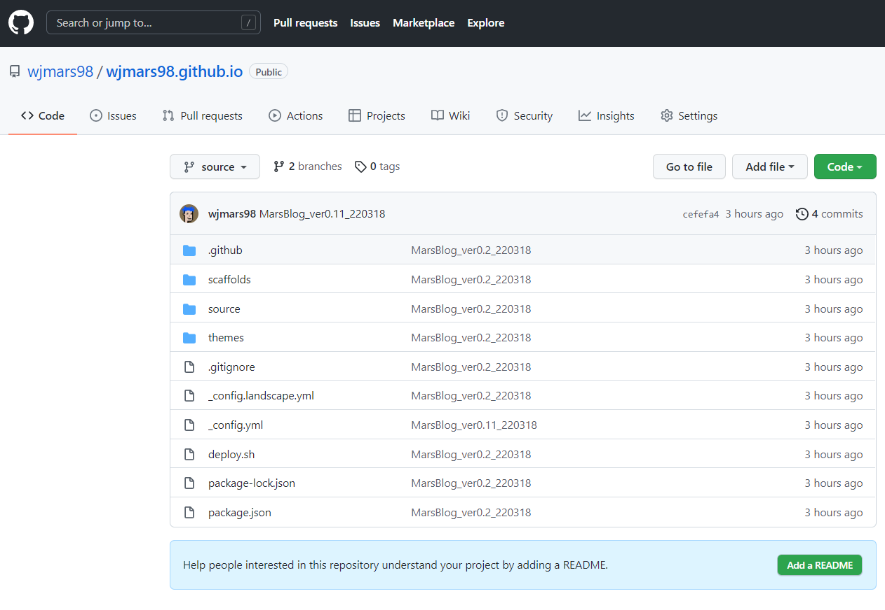
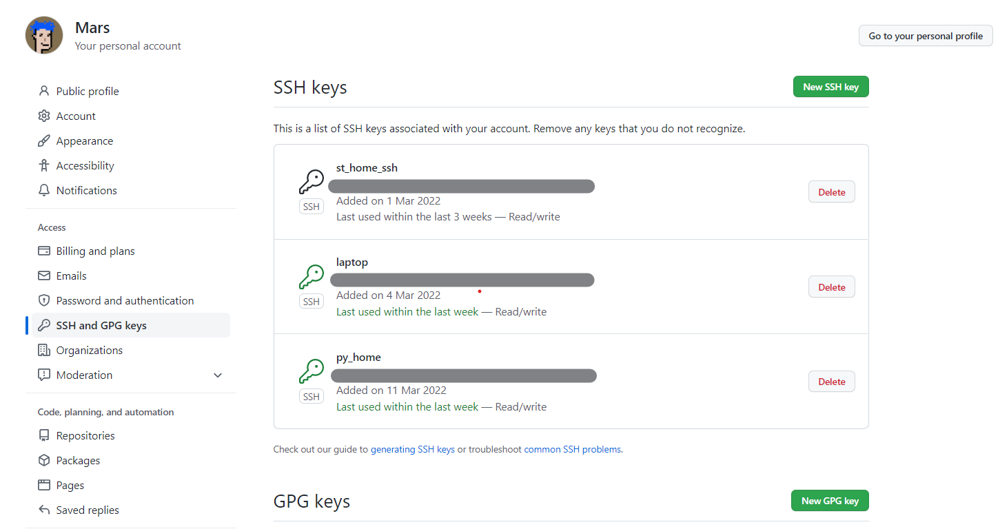
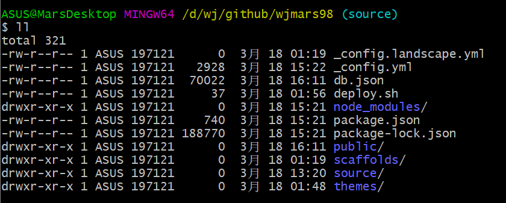
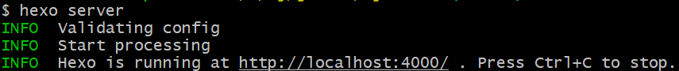
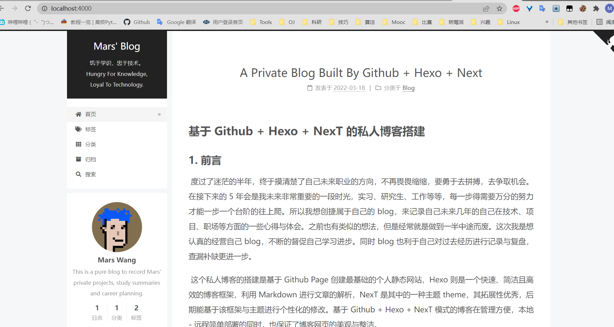
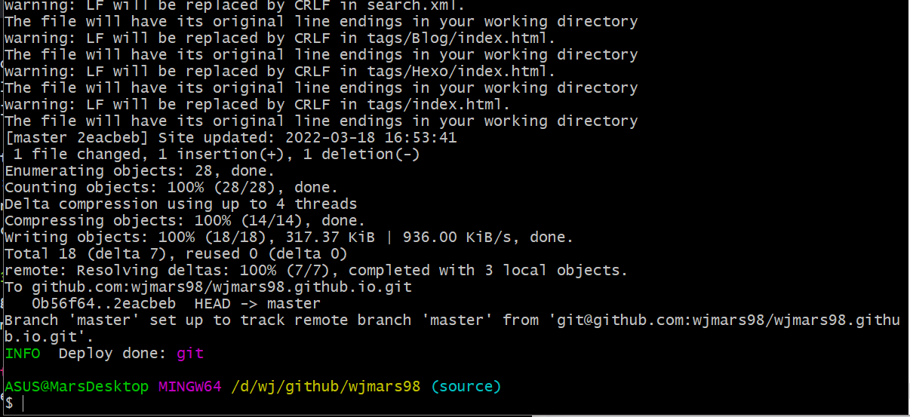
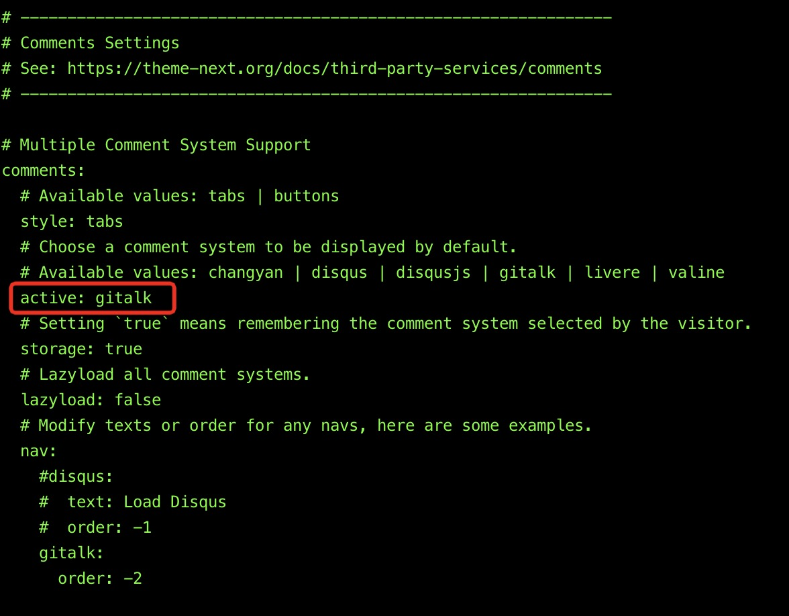
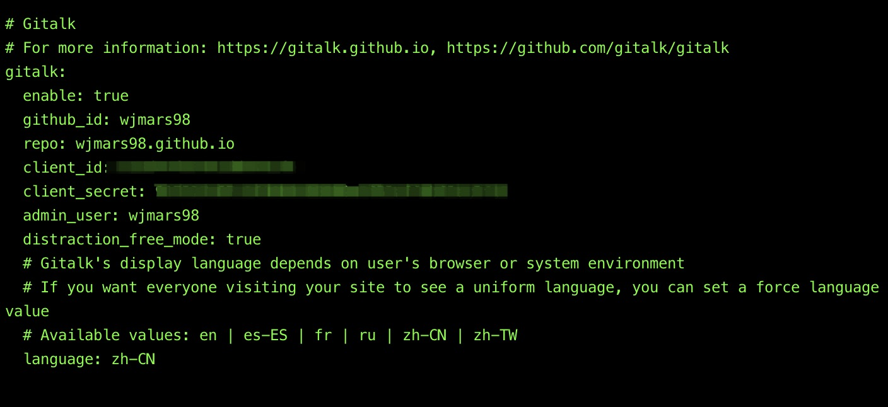

这个私人博客的搭建是基于Github Page创建最基础的个人静态网站，Hexo则是一个快速、简洁且高效的博客框架，利用Markdown进行文章的解析，NexT是其中的一种主题theme，其拓展性优秀，后期能基于该框架与主题进行个性化的修改。基于Github + Hexo + NexT模式的博客在管理方便，实现本地-远程简单部署的同时，也保证了博客网页的美观与整洁。
本文将从以下几个部分来记录该博客的搭建:
- 项目构建及其部署
- 配置文件功能解析
- 基于该框架主题的DIY
- 难点与收获
前言
度过了迷茫的半年，终于摸清楚了自己未来职业的方向，不再畏畏缩缩，要勇于去拼搏，去争取机会。在接下来的5年会是我未来非常重要的一段时光，实习、研究生、工作等等，每一步得需要万分的努力才能一步一个台阶的往上爬。所以我想创捷属于自己的blog，来记录自己未来几年的自己在技术、项目、职场等方面的一些心得与体会。之前也有类似的想法，但是经常就是做到一半中途而废。这次我是想认真的经营自己blog，不断的督促自己学习进步。同时blog也利于自己对过去经历进行记录与复盘，查漏补缺更进一步。
这个私人博客的搭建是基于Github Page创建最基础的个人静态网站，Hexo则是一个快速、简洁且高效的博客框架，利用Markdown进行文章的解析，NexT是其中的一种主题theme，其拓展性优秀，后期能基于该框架与主题进行个性化的修改。基于Github + Hexo + NexT模式的博客在管理方便，本地-远程简单部署的同时，也保证了博客网页的美观与整洁。
本文将从以下几个部分来记录该博客的搭建:
- 项目构建及其部署
- 配置文件功能解析
- 基于该框架主题的DIY
- 难点与收获
个人链接:
项目构建及其部署
准备条件
该博客主要是利用Github为其每个用户提供的Github Pages服务，允许用户搭建一个静态网站。所以首先需要Github上构建名为:{username}.github.io的仓库，其名字必须由“.github.io”结尾。同时为了后续的操作便利，需要配置本地与Github的ssh连接。
同时还需安装Node.js，Hexo。
1 | # node.js |


项目初始及本地搭建
首先, 需要创建项目，利用指令
1 | # hexo init {name} |
在wjmars98文件夹下面出现Hexo的初始化文件，各个文件的具体细节下一章再展开。

第二，需要将Hexo编译成HTML文件，调用指令
1 | # 编译形成HTML文件 |
输出结果里面包含了 js、css、font 等内容，处在了项目根目录下的 public 文件夹下面，随后利用Hexo提供的Server服务，将其在本地运行起来
1 | # 启动hexo服务器 |
随后可以在本地4000端口查看博客站点，如下所示,其中图例是已经选用next的情况。


项目部在Github Page上的部署
为了便利后面的操作，我们将部署的shell脚本写在 deploy.sh 的脚本文件上
1 | # deploy.sh 文件 |
利用 sh deploy.sh 指令就能完成部署操作。
在部署之前，我们还需要修改部署文件细节。打开根目录下的 _config.yml 文件，找到 Deployment 这个地方，把刚才新建的 Repository 的地址贴过来，然后指定分支为 master 分支，最终修改为如下内容：
1 | # Deployment |
还需安装支持 Git 的部署插件，名字叫做 hexo-deployer-git，然后才能顺利部署到Github上
1 | # 插件安装 |

此时打开https://wjmars98.github.io 便可以打开网站。
配置文件功能解析
在第二章中，我们初步完成了hexo地搭建以及在Github Page上地部署，文件夹为wjmars98，本章将对该文件夹下地配置文件进行详细解析。
首先是wjmars98文件夹的文件树:
1 | . |
我们可以在_config.yml中修改大部分配置。
Site
| 参数 | 描述 |
|---|---|
title |
网站标题 |
subtitle |
网站副标题 |
description |
网站描述 |
keywords |
网站的关键词。支持多个关键词。 |
author |
您的名字 |
language |
网站使用的语言。对于简体中文用户来说，使用不同的主题可能需要设置成不同的值，请参考你的主题的文档自行设置，常见的有 zh-Hans和 zh-CN。 |
timezone |
网站时区。Hexo 默认使用您电脑的时区。请参考 时区列表 进行设置，如 America/New_York, Japan, 和 UTC 。一般的，对于中国大陆地区可以使用 Asia/Shanghai。 |
Categories
| 参数 | 描述 | 默认值 |
source_dir |
资源文件夹，这个文件夹用来存放内容。 | source |
public_dir |
公共文件夹，这个文件夹用于存放生成的站点文件。 | public |
tag_dir |
标签文件夹 | tags |
archive_dir |
归档文件夹 | archives |
category_dir |
分类文件夹 | categories |
code_dir |
Include code 文件夹，source_dir 下的子目录 |
downloads/code |
i18n_dir |
国际化（i18n）文件夹 | :lang |
skip_render |
跳过指定文件的渲染。匹配到的文件将会被不做改动地复制到 public 目录中。您可使用 glob 表达式来匹配路径。 |
Writing
| 参数 | 描述 | 默认值 |
|---|---|---|
new_post_name |
新文章的文件名称 | :title.md |
default_layout |
预设布局 | post |
auto_spacing |
在中文和英文之间加入空格 | false |
titlecase |
把标题转换为 title case | false |
external_link |
在新标签中打开链接 | true |
external_link.enable |
在新标签中打开链接 | true |
external_link.field |
对整个网站（site）生效或仅对文章（post）生效 |
site |
external_link.exclude |
需要排除的域名。主域名和子域名如 www 需分别配置 |
[] |
filename_case |
把文件名称转换为 (1) 小写或 (2) 大写 | 0 |
render_drafts |
显示草稿 | false |
post_asset_folder |
启动 Asset 文件夹 | false |
relative_link |
把链接改为与根目录的相对位址 | false |
future |
显示未来的文章 | true |
highlight |
代码块的设置, 请参考 Highlight.js 进行设置 | |
prismjs |
代码块的设置, 请参考 PrismJS 进行设置 |
Date
Hexo 使用 Moment.js 来解析和显示时间。
| 参数 | 描述 | 默认值 |
|---|---|---|
date_format |
日期格式 | YYYY-MM-DD |
time_format |
时间格式 | HH:mm:ss |
updated_option |
当 Front Matter 中没有指定 updated 时 updated 的取值 |
mtime |
Extensions
| 参数 | 描述 |
|---|---|
theme |
当前主题名称。值为false时禁用主题 |
theme_config |
主题的配置文件。在这里放置的配置会覆盖主题目录下的 _config.yml 中的配置 |
deploy |
部署部分的设置 |
meta_generator |
Meta generator 标签。 值为 false 时 Hexo 不会在头部插入该标签 |
Front-Matter
Front-matter 是文件最上方以 --- 分隔的区域，用于指定个别文件的变量，举例来说：
1 | --- |
以下是预先定义的参数，您可在模板中使用这些参数值并加以利用。
| 参数 | 描述 | 默认值 |
|---|---|---|
layout |
布局 | config.default_layout |
title |
标题 | 文章的文件名 |
date |
建立日期 | 文件建立日期 |
updated |
更新日期 | 文件更新日期 |
comments |
开启文章的评论功能 | true |
tags |
标签（不适用于分页） | |
categories |
分类（不适用于分页） | |
permalink |
覆盖文章网址 | |
excerpt |
Page excerpt in plain text. Use this plugin to format the text | |
disableNunjucks |
Disable rendering of Nunjucks tag {{ }}/{% %} and tag plugins when enabled |
|
lang |
Set the language to override auto-detection | Inherited from _config.yml |
更多细节可以查阅:官方文档
基于NexT框架主题的DIY
我们选择框架在themes文件夹下，文件树如图所示:
1 | . |
目前 Hexo 里面应用最多的主题基本就是 Next 主题了，个人感觉这个主题还是挺好看的，另外它支持的插件和功能也极为丰富，配置了这个主题，我们的博客可以支持更多的扩展功能，比如阅览进度条、中英文空格排版、图片懒加载等等。
1 | git clone https://github.com/theme-next/hexo-theme-next themes/next |
执行完毕之后 Next 主题的源码就会出现在项目的 themes/next 文件夹下。 然后我们需要修改下博客所用的主题名称，修改项目根目录下的 _config.yml 文件，找到 theme 字段，修改为 next 即可，修改如下：
1 | theme: next |
添加Gitalk评论区
打开 github.com/settings/applications/new ，具体填法如下：
1 | Application name //应用名称，随便填 |
接着，你就可以得到Client ID和Client Secret，之后会用到的。接下来，我们回到hexo的主题配置里.
在next主题中，修改_config.xml文件，如图所示


难点与收获
Tags And Categories
只有文章支持分类和标签，您可以在 Front-matter 中设置。在其他系统中，分类和标签听起来很接近，但是在 Hexo 中两者有着明显的差别：分类具有顺序性和层次性，也就是说 Foo, Bar 不等于 Bar, Foo；而标签没有顺序和层次。
1 | categories: |
但是 Hexo 不支持指定多个同级分类。下面的指定方法：
1 | categories: |
会使分类Life成为Diary的子分类，而不是并列分类.
如果你需要为文章添加多个分类，可以尝试以下 list 中的方法。
1 | categories: |